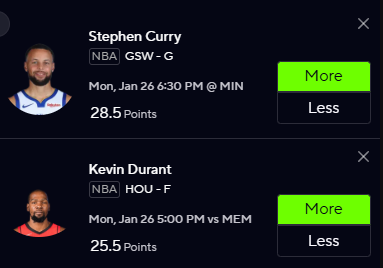
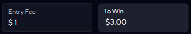
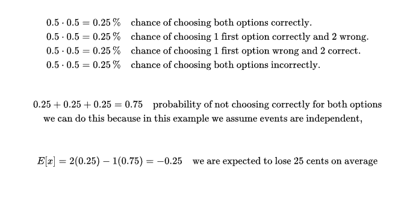
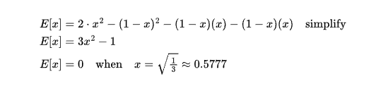
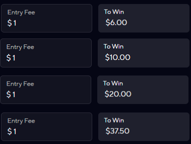
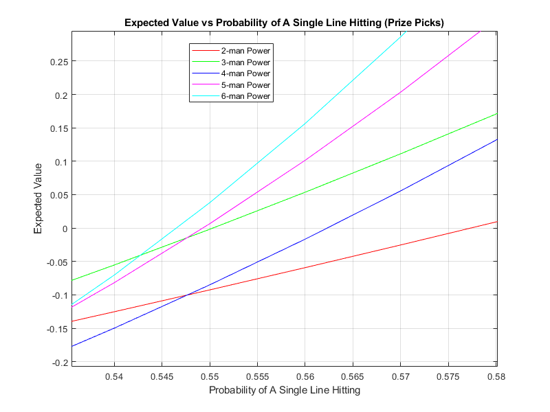
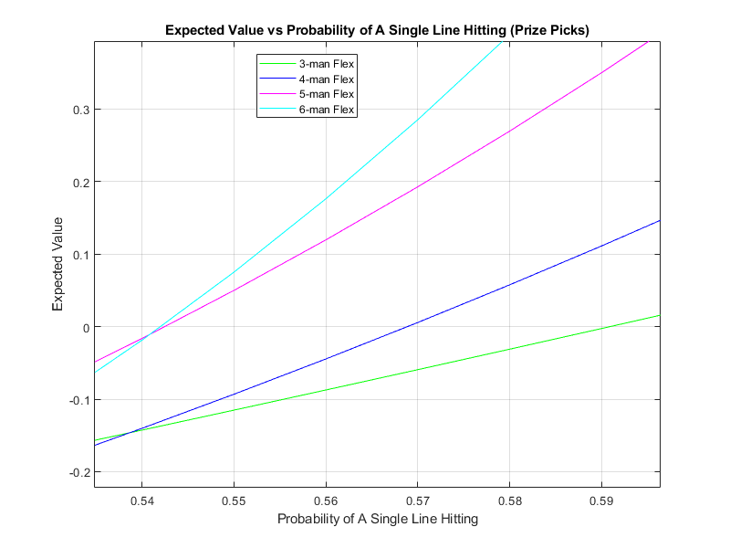
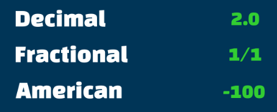

Expected Value and Sportsbooks
Two types of Sportsbooks
Sports betting has exploded in popularity over the past few years, but like all forms of gambling, the odds are stacked against the bettor. This naturally raises questions such as: Why are the odds against me, and is it possible to beat the sportsbook despite this disadvantage?
So lets explore one of the most popular sports betting platform that is legal in my state; Prizepicks. Currently Prizepicks has too tabs Teams and players, for now we will just consider the players tab. In the players section there are two options power and flex we will explore power first
There are several different power options 2, 3, 4, 5, and 6. This works by picking over or under on a players stat projection and if you get them ALL correct you win, payouts are based on the number of different picks you make 2 - 6.
Lets start with a 2 man power and look at the expected value.
We will consider a 1$ bet, If you get both correct you get 3$, so 2$ in profit
 To figure out how we can write an expected value function, lets consider that I can choose the correct More or Less pick 50% of the time
To generalize our expected value will consider the whole range of possibilites for x where x repersents probability of choosing more or less correctly
The x^2 term is probability of choosing correctly on both options, the 1-x^2 term is the probability of choosing incorrectly for both, and the 1-x * x terms are the probability of choosing 1 wrong and 1 correct. We can follow this process for the 3 - 6 leg plays, but we will generalize some terms so that we dont have to write to much. This situation we care about number of succes and fails, two success and we get the the payout anything else and we lose, this is a perfect oppurtunity to use the binomial disribution
Here are the payouts, we can create an expected value equation in the same process we did with the 2 man
Sadly there is no quadratic equation to find the zeros of these functions, so I used a numerical root finding method to get the following zeros 0.55032, 0.56234, 0.54928, 0.54659, for 3 - man to 6 - man respectively
The next topic we will address is the Flex mode instead of power. The only difference is in Flex you can still get a payout if you only get a couple of the entries wrong, we can create the expected value function the same way we did for the power entries
The roots are as follows 0.59094, 0.5689, 0.54253, 0.54206 respectively.
Understanding Odds Formats
Lets switch gears to talk about the other kind of bets, with odds given to us that will determine the payouts. these odds are presented in the following ways
There are three main odds formats—decimal, fractional, and moneyline (American)—and they all show the same thing in different ways: potential payout and implied probability. Decimal odds show the total return for every 1 unit staked (including your stake), so odds of 2.50 mean you get 2.50 back for each 1 wagered. Fractional odds show profit relative to your stake, so 3/2 means you win 3 units for every 2 staked (plus your stake back). Moneyline odds use positive and negative numbers: positive odds (like +150) show how much profit you'd make on a 100 stake, while negative odds (like −200) show how much you need to stake to win 100.
To convert from decimal odds to implied probability is as simple as dividing 1 by the decimal value, e.g. decimal odds of 2 = (1/2) = 0.50
To convert fractional odds; 1 divided by (the fractional odds plus 1), e.g. fractional odds of 3/1 = (1 / ((3/1) + 1)) = 0.25
For American first consider positive, 100 divided by (the american odds plus 100), e.g. american odds of 150 = (100 / (150 + 100)) = 0.40
For negative values, Firstly multiply the american odds by -1 and use the positive value in the following formula: american odds divided by (the american odds plus 100), e.g. american odds of -300 = (300/(300+100)) = 0.75
Mathematical Strategies for Positive Expected Value
Strategies Overview
1. Value Betting: Finding Market Inefficiencies
Value betting is the cornerstone of profitable sports betting. A bet has positive expected value when your estimated probability of an outcome is higher than the implied probability reflected in the odds.
EV = (P × W) - ((1-P) × L)
Where:
P = True probability of winning
W = Amount won per dollar bet
L = Amount lost (typically 1 for a $1 bet)
How to Find Value Bets
- Calculate True Probability: Use historical data, advanced metrics, and statistical models to estimate the actual probability of an outcome
- Convert Odds to Implied Probability: Use the formulas from the previous section
- Compare: If your true probability > implied probability, you have found value
- Calculate EV: Determine if the bet is profitable long-term
Example: NBA Game Value Bet
Sportsbook offers Lakers at +200 (American odds) to win
Implied Probability: 100 / (200 + 100) = 0.333 or 33.3%
Your Analysis: Based on advanced metrics, you estimate Lakers have a 40% chance to win
EV Calculation: EV = (0.40 × $2) - (0.60 × $1) = $0.80 - $0.60 = +$0.20
Conclusion: This bet has positive expected value of $0.20 per $1 wagered
2. Arbitrage Betting (Sure Betting)
Arbitrage betting involves placing bets on all possible outcomes of an event across different sportsbooks to guarantee a profit regardless of the result. This exploits differences in odds between bookmakers.
(1 / Decimal Odds A) + (1 / Decimal Odds B) < 1
If the sum is less than 1, an arbitrage opportunity exists
Profit Percentage = (1 - Sum) × 100%
Arbitrage Implementation Steps
- Find Discrepancies: Compare odds across multiple sportsbooks for the same event
- Calculate Arbitrage: Use the formula to verify opportunity exists
- Determine Stake Distribution: Calculate how much to bet on each outcome
- Execute Quickly: Place bets simultaneously before odds change
Example: Tennis Match Arbitrage
Bookmaker A: Player 1 at 2.10 (Decimal)
Bookmaker B: Player 2 at 2.05 (Decimal)
Check for Arbitrage: (1/2.10) + (1/2.05) = 0.476 + 0.488 = 0.964 < 1 ✓
Profit Margin: (1 - 0.964) × 100 = 3.6%
For $1000 total stake:
Bet on Player 1: $1000 × (0.476/0.964) = $493.78
Bet on Player 2: $1000 × (0.488/0.964) = $506.22
Guaranteed Profit: ~$36 regardless of outcome
3. Kelly Criterion: Optimal Bet Sizing
The Kelly Criterion is a mathematical formula that determines the optimal size of a bet to maximize long-term growth while minimizing risk of ruin. It's essential for bankroll management when you have an edge.
f* = (bp - q) / b
Where:
f* = Fraction of bankroll to wager
b = Decimal odds - 1 (net odds received)
p = Probability of winning
q = Probability of losing (1 - p)
For American odds: b = (Odds/100) if positive, or (100/|Odds|) if negative
Kelly Criterion Advantages
- Optimal Growth: Maximizes long-term logarithmic growth of bankroll
- Risk Management: Prevents overbetting and risk of ruin
- Scales with Edge: Bet size increases with your advantage
- Adaptive: Automatically adjusts to changing bankroll size
Example: Kelly Calculation
Scenario: You estimate 55% chance of winning, odds are +110 (2.10 decimal)
Variables:
p = 0.55
q = 0.45
b = 1.10 (decimal odds - 1)
Calculation:
f* = ((1.10 × 0.55) - 0.45) / 1.10
f* = (0.605 - 0.45) / 1.10 = 0.141
Result: Bet 14.1% of your bankroll
If bankroll = $1000, bet $141
4. Statistical Modeling and Predictive Analytics
Building sophisticated statistical models can give you an edge by more accurately predicting outcomes than the market. This involves quantitative analysis using historical data, player statistics, and advanced metrics.
Common Modeling Approaches
- Regression Models: Linear, logistic, or Poisson regression to predict scores or win probability
- Machine Learning: Random forests, neural networks, gradient boosting for pattern recognition
- Elo Ratings: Dynamic rating system that updates based on game results
- Monte Carlo Simulation: Run thousands of simulations to estimate probability distributions
- Bayesian Methods: Incorporate prior knowledge and update with new information
Example: Simple Poisson Model for Soccer
Step 1: Calculate average goals scored/conceded for each team
Team A: 1.8 goals/game (attack), 1.1 goals conceded/game (defense)
Team B: 1.5 goals/game (attack), 1.3 goals conceded/game (defense)
Step 2: Adjust for opponent strength
Expected goals for Team A = 1.8 × (1.3 / league_avg_defense)
Expected goals for Team B = 1.5 × (1.1 / league_avg_defense)
Step 3: Use Poisson distribution to calculate probability of each scoreline
Step 4: Compare your probabilities to bookmaker odds to find value
5. Line Shopping and Odds Comparison
Line shopping means comparing odds across multiple sportsbooks to find the best price for your bet. Even small differences in odds significantly impact long-term profitability.
Extra Profit = (Better Odds - Worse Odds) × Number of Bets × Average Stake
Over 1000 bets of $100, a 0.05 decimal odds improvement = $5,000 extra profit
Line Shopping Best Practices
- Multiple Accounts: Maintain accounts at 5-10 different sportsbooks
- Odds Aggregators: Use comparison tools to quickly identify best lines
- Timing: Monitor line movements and bet when odds are most favorable
- Reduced Vig: Some books offer lower margins on certain markets
- Promotions: Utilize sign-up bonuses and reduced juice offers strategically
Example: Impact of Line Shopping
Same bet across three books:
Book A: +105 (2.05 decimal)
Book B: +110 (2.10 decimal)
Book C: +115 (2.15 decimal)
$100 bet winning scenario:
Book A profit: $105
Book B profit: $110
Book C profit: $115
Over 100 winning bets: Choosing Book C over Book A = $1,000 extra profit
6. Closing Line Value (CLV) Analysis
Closing Line Value measures whether you beat the market by comparing your bet's odds to the closing line (final odds before event starts). Consistently beating the closing line is the strongest predictor of long-term profitability.
CLV% = ((Your Decimal Odds / Closing Decimal Odds) - 1) × 100
Positive CLV = You got better odds than the closing line
Example: Bet at 2.10, closes at 1.90 CLV% = ((2.10 / 1.90) - 1) × 100 = 10.5% CLV
Why CLV Matters
- Market Efficiency: Closing lines are the most efficient (accurate) because they incorporate the most information
- Performance Metric: Track CLV instead of short-term win/loss record
- Validation: Positive CLV proves your analysis beats the market consensus
- Long-term Indicator: Consistent positive CLV guarantees long-term profitability
Example: CLV Performance Tracking
Bet 1: Took +150, closed +130 → CLV = +15.4%
Bet 2: Took -110, closed -120 → CLV = +9.1%
Bet 3: Took +200, closed +220 → CLV = -9.1%
Average CLV: +5.1%
Analysis: Positive average CLV indicates you're finding value. Even losing bets with positive CLV are +EV decisions. Your win rate might be 48%, but with +5% CLV, you're profitable long-term.
Combining Strategies for Maximum Edge
The most successful sports bettors don't rely on just one strategy—they combine multiple approaches to create a comprehensive system that maximizes expected value while managing risk.
Integrated Approach
- Build Models: Develop statistical models to estimate true probabilities (Strategy 4)
- Find Value: Compare model outputs to market odds to identify value bets (Strategy 1)
- Shop Lines: Check multiple books for the best available odds (Strategy 5)
- Size Appropriately: Use Kelly Criterion to determine optimal stake (Strategy 3)
- Track Performance: Monitor CLV to validate your edge (Strategy 6)
- Exploit Opportunities: Take arbitrage when available for risk-free profit (Strategy 2)
Contact Me
Feel free to reach out through the following channels:
- Email: 34omarsafi@gmail.com
- Phone: (408) 457-4718
- LinkedIn: My LinkedIn Profile